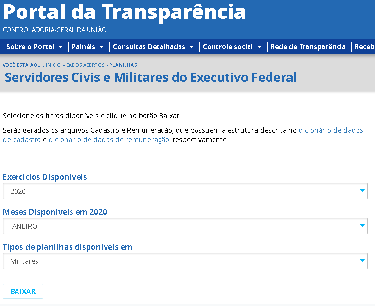
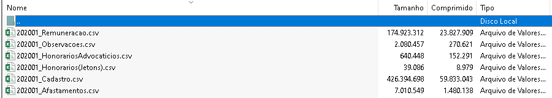

O Sistema Integrado de Administração de Pessoal (SIAPE), através do Portal da Transparência, permite consultas aos dados de pessoal dos servidores civis e militares da Administração Pública Federal. Ao contrário de outros sistemas, como o PEP, o SIAPE oferece os dados de forma desagregada, isto é, por servidor.
É possível ter acesso ao downloads dos dados através do link "http://www.portaltransparencia.gov.br/download-de-dados/servidores" ou clicando aqui. Existem dois tipos de planilhas disponíveis: servidores militares e civis, sendo que para o Painel Unificado foram utilizados apenas os dados referentes ao servidores civis.
O arquivo dos servidores civis segue o formato "AAAAMM_Servidores.zip" e possue 6 planilhas: "AAAAMM_Cadastro", "AAAAMM_Remuneracao", "AAAAMM_Observacoes", "AAAAMM_HonorariosAdvocaticios" e "AAAAMM_Afastamento", todas em foramato ".csv".
As planilhas de cadastro e remuneração possuem as variáveis de interesse para compor o perfil dos orgãos públicos. Na planilha de Cadastro temos o ID único de cada servidor, nome, CPF, nivel do cargo, orgão de lotação e exercício, entre outras. Já a planilha de Remuneração possue o ID único do servidor, nome, CPF, remuneração bruta e líquida, entre outras tantas variáveis.
O acesso a todas as variáveis e ao dicionário de dados das planilhas de cadastro e remuneração podem ser encontrados no site do portal da transparência ou clicando aqui (cadastro) e aqui (remuneração)
Integração e criação das novas variáveis
As variáveis utilizadas no âmbito deste trabalho foram restringidas. O motivo para tal se deu porque os dados disponibilizados no Portal da Transparência eram muito amplos e a base ser muito ampla. Como dito anteriormente, são disponibilizados dois arquivos no Portal da Transparência: uma base com informações sobre o servidor, chamada de cadastro, e outra com informações sobre a remuneração, de mesmo nome. Ambas as bases compartilham um identificador único, que permite cruzar os dados individuais nas duas bases.
Foram escolhidas três dimensões de análise: análise geral de todos os servidores, análise por servidores com cargo de chefia e informações remuneratórias. Deve-se levar em conta que há servidores repetidos na base, que foram contados como um único servidor no órgão de exercício do cargo efetivo. Isso se deve ao fato de que o SIAPE lista servidores efetivos com cargo em comissão ou funções comissionadas e participação em conselho com mais de um registro: um para ele como servidor efetivo e outros para o cargo ocupado e participações em conselhos, inclusive sendo listados em órgãos diferentes.
Análise geral de todos os servidores
No âmbito da primeira análise. Analisou-se, primeiramente, se o servidor está efetivamente em atividade. A partir disso, calculou-se a quantidade de servidores ativos no órgão e o tempo de serviço dos servidores, considerando períodos de afastamento também. Esta informação nos permite criar duas variáveis:
- qtde_servidores: quantidade de servidores no órgão;
- med_tempo_serv_orgao: média do tempo de serviço no órgão, em anos; e
- med_tempo_serv_publico: média do tempo de serviço público como um todo, em anos.
Além disso, também calculamos os desvios padrões, para verificar se tem muita diferença no tempo de serviço no órgão, com as variáveis sd_tempo_serv_orgao e sd_tempo_serv_publico.
Análise por servidores com cargo de chefia
Considerando o grupo da análise anterior, isto é, servidores ativos, esta análise filtra os servidores que ocupem cargos em comissão. Notadamente, dois grupos existem nessas classificações: servidores efetivos, sob o regime jurídico único e celetistas. No primeiro grupo estão servidores efetivos que ocupam cargo em comissão ou função comissionada, enquanto que no outro estão trabalhadores não servidores estatutários, mas exercem alguma função comissionada.
Separados estes dois grupos, as medidas tomadas dizem respeito ao total de cargos em comissão ocupados (total_cargo_chefia_ocup), a quantidade de cargos ocupado por servidores efetivos ( servidores_efetivos) e o percentual destes cargos (perc_efetivos_chefia), e a quantidade de cargos ocupado por celetistas ( celetistas) e o percentual destes cargos (perc_celetistas_chefia).
Informações remuneratórias
As informações remuneratórias utilizam duas bases: a base de remunerações e a base de servidores. Esta base lista apenas uma informação remuneratória. Além disso, não especifica a que dado se refere. Ou seja, se um servidor aparece na base de cadastro duplicado, não se sabe se diz respeito ao dado do servidor efetivo no seu cargo efetivo, no seu cargo comissionado ou participação em conselho (muitas vezes em outros órgãos), porque a base não especifica o órgão. Desta forma, essa análise utiliza os dados filtrados na análise geral de todos os servidores, de modo que as remunerações aqui dizem respeito aos servidores na base de cadastro geral de todos os servidores.
As informações geradas aqui utilizaram duas informações de remuneração: remuneração bruta e remuneração líquida, que é a remuneração bruta menos os descontos. Foram tomadas quatro medidas:
- med_remunera_bruta: média da remuneração bruta;
- med_remunera_líquida: média da remuneração líquida;
- sd_remunera_bruta: desvio padrão da remuneração bruta; e
- sd_remunera_líquida: desvio padrão da remuneração líquida